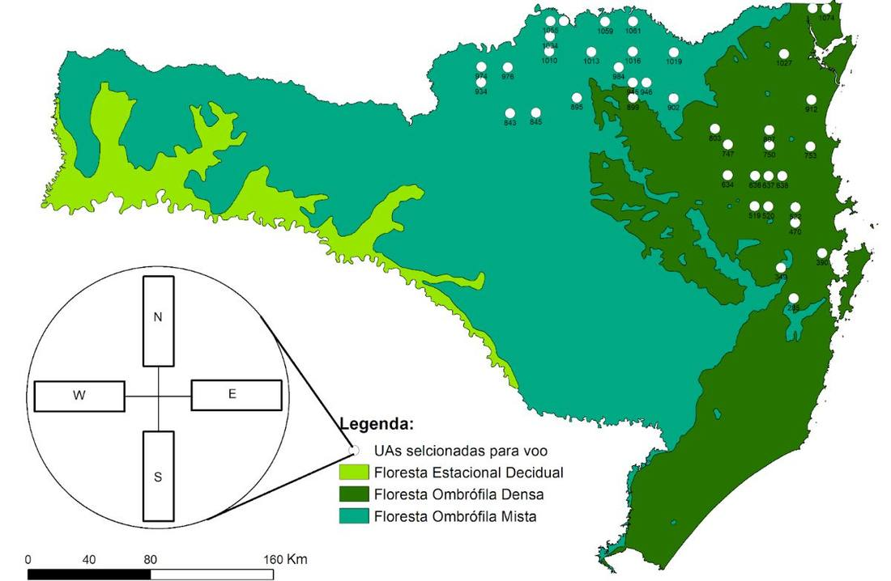
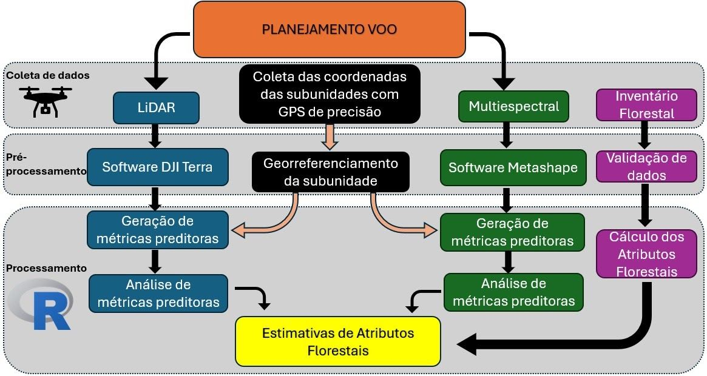
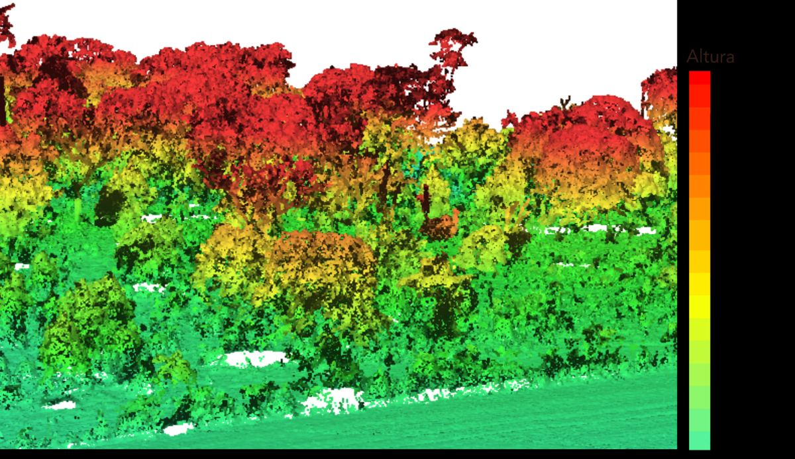

A utilização de drones confere agilidade e escalabilidade na integração de dados de inventário florestal e sensoriamento remoto. O FlorestaSC usa drones com sensores multiespectral e LiDAR para complementar os dados de campo e viabilizar análises mais abrangentes e precisas da estrutura da vegetação.
Área de Estudo
Os voos com drone são realizados sobre as Unidades Amostrais (UAs) do FlorestaSC, onde também são executadas as atividades de Inventário Florestal. Entre junho e dezembro de 2024, foram realizados voos sobre 40 UAs, sendo 20 situadas na Floresta Ombrófila Mista (FOM) e 20 na Floresta Ombrófila Densa (FOD). As UAs da FOM estão concentradas na região do Planalto Norte e as da FOD entre o Litoral Norte e a Grande Florianópolis.

Equipamentos
Os voos foram feitos por um drone DJI Matrice 350 RTK, acompanhado dos equipamentos a seguir:
- uma câmera multiespectral: produz ortomosaicos de imagens com resolução espacial média de 4 cm em cinco bandas (RGB, borda do vermelho e infravermelho próximo);
- um sensor LiDAR (laser): produz uma nuvem densa de pontos 3D (três dimensões) com discretização de cinco retornos;
- um receptor GNSS diferencial RTK: corrige a trajetória de voo em tempo real, com uma acurácia posicional de até 10 cm;
- um receptor GNSS diferencial SatLab FR-20: coleta acuradamente as coordenadas do início e fim de cada subunidade que compõe uma UA.
Coletas de Dados
Antes de realizar a coleta de dados em campo são feitos, para cada UA, dois planos de voo do drone, um para cada sensor (LiDAR e Multiespectral). No plano de voo, são configurados parâmetros como velocidade de deslocamento e altura de voo. A qualidade dos dados depende desses parâmetros, além dos ajustados em tempo real pelos equipamentos durante o voo, como o ISO, que determina a claridade da foto, e o Shutter, que evita borrões devido à movimentação do drone.

Drone para aquisição de imagens nas UAs do FlorestaSC
Ao localizar a UA em campo, duas atividades são realizadas: voos com drone e coleta das coordenadas iniciais e finais de cada subunidade da UA. A coleta de dados é realizada em condições de tempo favoráveis - sem chuva e neblina.
Antes de realizar o voo com drone, é feita a montagem do receptor RTK, em local aberto. O voo do drone é então executado, ao mesmo tempo que a trajetória do voo é corrigida em tempo real pelo receptor RTK. O voo é monitorado através do controle remoto do drone.
Dois voos por UA são realizados:
(A) com um sensor multiespectral, para registrar múltiplas imagens aéreas;
(B) com um sensor LiDAR (laser), para obter nuvens de pontos 3D por meio de emissão de feixes de luz.

Linha de voo (multiespectral). Cada drone indica a posição onde é obtida uma imagem. Linhas cinzas representam a área do terreno abrangida por cada imagem.

O sensor LiDAR emite feixes de luz que, ao incidirem sobre um objeto (ex.: folha, galho, tronco ou solo da floresta), registra um sinal de retorno de cada objeto.
Após o voo, adentra-se no remanescente florestal onde a UA está situada, para coletar as coordenadas do início e fim de cada subunidade da UA (20 x 50 metros; veja a configuração da Unidade Amostral). O início e o fim da subunidade são materializados com hastes metálicas enterradas durante o inventário florestal, as quais são encontradas com a ajuda de um detector de metais. A aquisição das coordenadas depende de dois receptores. Utiliza-se o receptor RTK (“base”), que é instalado fora da floresta para rastrear sinais de satélites e transmitir correções para o outro receptor (rover), que é utilizado dentro da floresta. O rover é acoplado a um bastão telescópico de 8 m para alcançar uma maior altura, permitindo amplificar e melhorar a comunicação com os satélites.

Localização da haste metálica implantada no inventário florestal (no início e fim de cada subunidade da UA), para coleta de coordenadas com GPS de precisão.

Equipe de operação do drone

Montagem do RTK e drone, em campo

Instalação do receptor (rover) dentro da floresta, acoplado a um bastão de 8 m

Monitoramento do voo do drone pelo controle remoto
Fluxograma de Trabalho
As etapas da operação são relacionadas a seguir e demonstradas também no fluxograma abaixo.
- 1° etapa: planejamento de voo, que compreende a análise e seleção de UAs a serem sobrevoadas, as configurações de voo no aplicativo e a logística de campo;
- 2° etapa: coleta de dados através de sobrevoos com drone, utilizando sensor LiDAR e câmera multiespectral;
- 3º etapa: pré-processamento, que consiste no tratamento dos dados coletados em softwares específicos de cada equipamento (LiDAR: Dji Terra; multiespectral: Agisoft Metashape);
- 4º etapa: os produtos obtidos no pré-processamento são processados no software estatístico R para cálculo e seleção de métricas preditoras de atributos florestais;
- Por fim, as métricas selecionadas são utilizadas como variáveis preditoras em modelos de predição de atributos florestais.

Produtos Gerados
A partir das imagens do drone pode-se extrair várias informações sobre as características da floresta. Abaixo são apresentados alguns produtos obtidos pelo FlorestaSC através do uso dos drones:

Perfil de uma floresta obtido com sensor LiDAR. A nuvem de pontos permite avaliar o dossel da floresta e a altura de árvores individuais.
Fotografia aérea do drone, a qual serve de matéria-prima para a identificação de espécies arbores-centes através de inteligência artificial.
Ortofoto para extração de métricas preditoras de atributos florestais (ex.: NDVI e NDRE).
Produto da aplicação de algoritmos de aprendizado de máquina para classificação de pontos em solo, sub-bosque, troncos, galhos e folhas.
Modelo Digital de Superfície (na imagem) e Modelo Digital do Terreno.
Modelo de Altura do Dossel.
FINANCIAMENTO:
FlorestaSC
florestasc@furb.br 47 3221-6100
Página migrada de floresta.sc.gov.br.